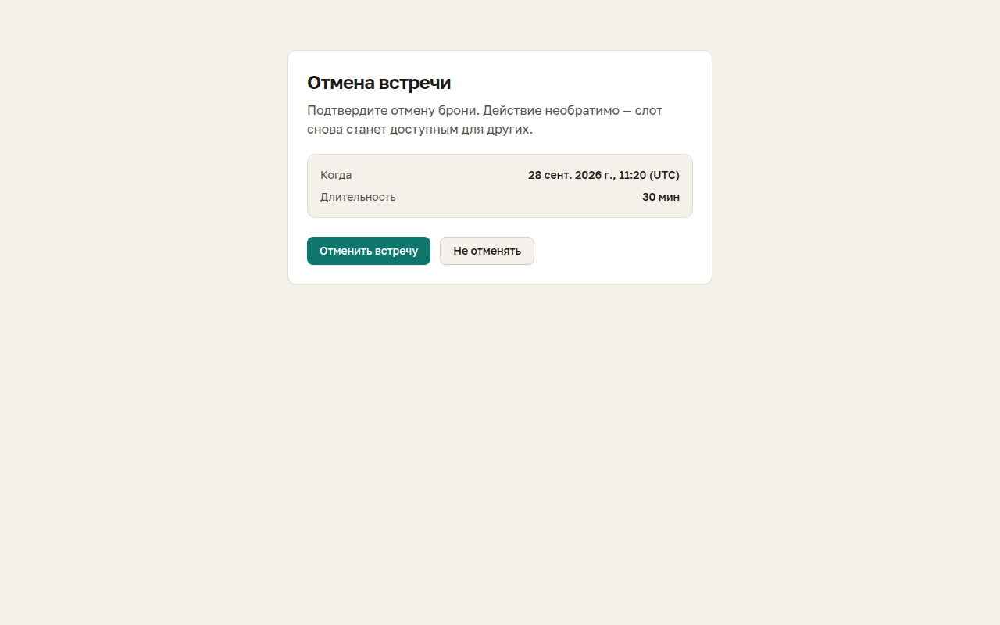

Аудит · 25 сентября 2026 · прод и локальная сборка репозитория
Что мешает гостю и организатору сейчас
Приложение зрелое: есть типы встреч, перенос, отмена, .ics, тёмная тема. Проблемы в основном в согласованности: время показывается по-разному, у экранов разный визуальный язык, личные данные гостей видны всем. Цифры на скриншотах отсылают к пунктам списка.
Критично
1
Имена и email всех гостей открыты публично
Пункт «Предстоящие события» (/events) виден любому посетителю и показывает контакты чужих броней. На проде там реальные адреса.
2
Одна встреча показывается в трёх вариантах времени
Правила доступности заданы в UTC (10:00–18:00), поэтому гость из Москвы видит 13:00–20:50. На экране успеха встреча в 14:20, на странице отмены — «11:20 (UTC)».
3
На телефоне дни недели подписаны со сдвигом
В ленте дат 28 сентября подписано «Вс», хотя это понедельник. Легко записаться не на тот день.
Важно
4
Месячная сетка режет 14-дневное окно
В сентябре доступны только 28–30 число, остальные дни прячутся за стрелкой. Кажется, что записаться почти некуда.
5
Перенос в один клик без подтверждения
Двенадцать одинаковых кнопок «Перенести сюда», текущее время не отмечено, шапки приложения нет.
6
Отмена выглядит как основное действие
Необратимое действие окрашено в фирменный зелёный, рядом «Не отменять». Нет шапки и пути назад.
7
Выбор типа встречи оторван от карточки
Табы типов стоят над макетом. У «Конференции» 45 минут, а шаг сетки 40 минут: 13:40–14:25 наезжает на слот 14:20.
Заметно
8
Форма длиннее, чем нужно
Пять полей плюс галочка. Кнопка неактивна до галочки, и форма не объясняет почему.
9
Экран успеха без иерархии
Пять кнопок одного веса. Ссылка для отмены оказывается ниже первого экрана.
10
На телефоне навигация обрезается
«Мои встречи» и переключатель темы не помещаются в шапку.
11
Панель организатора — одна длинная лента
В сайдбаре есть разделы, но всё выводится подряд. Поля времени обрезаны («10:», «06:»), сайдбар заканчивается на высоте экрана.
12
Первый слот выбран за гостя
Кнопка «Забронировать» у 13:00 появляется до того, как гость что-то выбрал. На экране 1366×561 колонка времени уходит под сгиб.
 4
12
2
7
4
12
2
7
/book/default · десктоп 1280 px
 3
10
3
10
/book/default · телефон 390 px

6 2/cancel/:token · время в UTC, зелёная кнопка удаления
 11
2
11
11
2
11
/dashboard · все разделы одной лентой, поля времени обрезаны